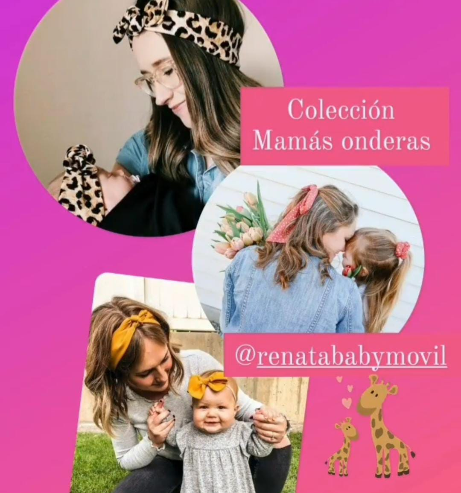
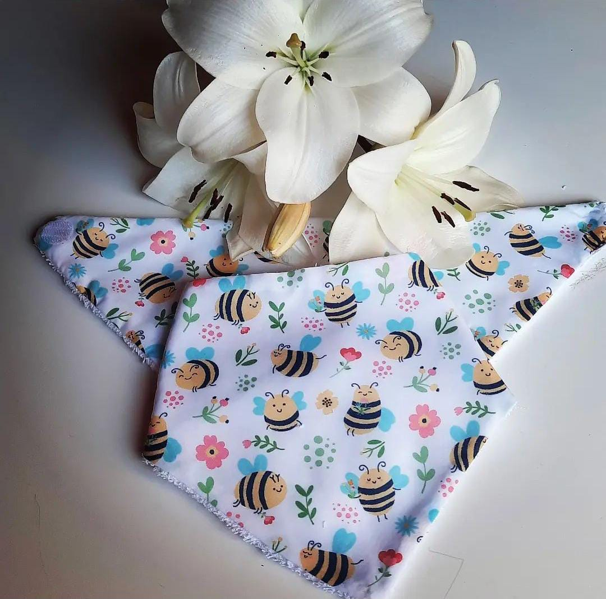
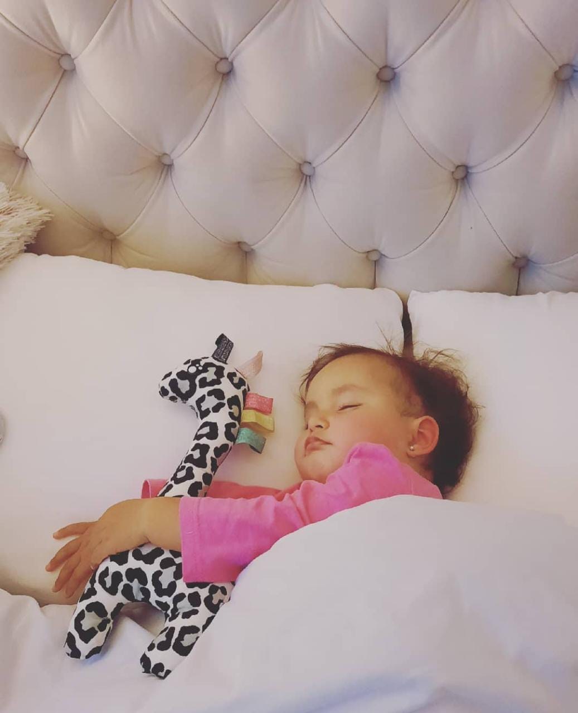
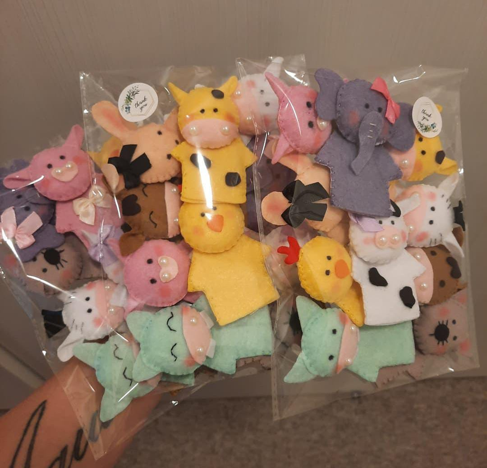

Los móviles colgantes para niños son juguetes diseñados para estimular la percepción visual y auditiva de los bebés y niños pequeños. Se pueden colgar en la cuna, el coche o en cualquier lugar que sea seguro y accesible para el niño.
Estos móviles suelen tener figuras coloridas y atractivas, como animales, estrellas o nubes, que se balancean y giran suavemente para captar la atención del niño y estimular su coordinación visual. Además, algunos modelos incluyen sonidos suaves y melodías relajantes que ayudan a calmar al bebé y promover el sueño.
2 - Línea Renata Boutique
colección de diademas y cintillos decorados con diferentes materiales y adornos para crear un look de princesa.
Estos cintillos suelen estar diseñados en tonos pastel o brillantes y pueden tener detalles como flores de tela, lazos, perlas, lentejuelas, diamantes de imitación, y otras piedras decorativas para crear un aspecto elegante y sofisticado.
Algunos cintillos para niñas pueden estar hechos de materiales suaves y cómodos, como tela de algodón o seda, mientras que otros pueden tener una base de plástico o metal para mayor durabilidad.
Estos accesorios de moda son populares para ocasiones especiales como bodas, bautizos, fiestas de cumpleaños, sesiones de fotos, entre otros eventos donde se busca un look más formal y sofisticado. Además, son una excelente opción para añadir un toque de glamour y estilo a cualquier conjunto cotidiano.

3 - Linea Mamas Onderas
Mamas Onderas es una línea de cintillos diseñados para que la mamá y el bebé puedan tener el mismo estilo de diadema o cintillo. Estos cintillos son ideales para las mamás que quieren compartir un momento especial con su bebé mientras se ven adorables y elegantes.
Los diseños de Mamas Onderas suelen ser simples y elegantes, con detalles como flores, lazos, perlas, y otros adornos que combinan perfectamente con cualquier atuendo. Además, están fabricados con materiales suaves y cómodos para garantizar el confort tanto de la mamá como del bebé.

4 - Baberos y portachupetes
Los baberos son un tipo de accesorio para bebés que se utilizan para proteger la ropa del bebé durante la alimentación. Estos productos suelen estar fabricados en materiales absorbentes, como algodón o tejidos sintéticos, y se cierran con broches o velcro en la parte trasera del cuello del bebé. L
Por otro lado, los portachupetes son productos diseñados para mantener los chupetes del bebé limpios y a salvo de la suciedad y los gérmenes. Estos productos suelen estar fabricados en materiales resistentes y fáciles de limpiar, como silicona o plástico, y pueden tener diseños coloridos o estampados para atraer la atención del bebé.

5 - Peluches de apego
Los peluches de apego son juguetes de peluche suaves y acogedores diseñados para brindar consuelo y seguridad a los bebés y niños pequeños. Estos peluches suelen tener un tamaño pequeño y estar hechos con materiales suaves y agradables al tacto, como algodón o poliéster.
El objetivo de los peluches de apego es proporcionar una sensación de seguridad y comodidad a los bebés, quienes a menudo se sienten más seguros cuando tienen algo suave y familiar para sostener y abrazar. Estos juguetes pueden ser particularmente útiles para bebés que tienen dificultades para dormir o que se sienten ansiosos o inseguros.
6 - Coronas
Los cintillos corona y coronas para niñas son accesorios de moda muy populares en la vestimenta infantil. Estos productos se utilizan para crear un estilo único y elegante, además de proporcionar un toque de fantasía y diversión a la vestimenta de las niñas.
La importancia de los cintillos corona y coronas para niñas y niños radica en su capacidad para fomentar la imaginación y la creatividad . Estos accesorios pueden hacer que las niñas se sientan como princesas y los niños como reyes, permitiéndoles experimentar con diferentes roles y personalidades.

7 - Titeres de deditos
Estimulan la imaginación y la creatividad: Los títeres de dedos permiten a los niños crear historias e inventar personajes, lo que ayuda a estimular su imaginación y creatividad.
Mejoran la comunicación y el lenguaje: Al jugar con títeres de dedos, los niños practican habilidades de comunicación y lenguaje, ya que tienen que pensar en lo que dirán los personajes y cómo se comunicarán entre ellos.
Fomentan la empatía y la comprensión: Los títeres de dedos pueden ayudar a los niños a entender y empatizar con los demás, ya que les permiten representar situaciones y emociones.
8 - Colgantes
Desarrollo cognitivo: Al mirar y seguir el movimiento de los elementos del móvil, los bebés pueden desarrollar habilidades cognitivas, como la atención, la percepción visual y la capacidad de seguir objetos en movimiento.
Fomento del desarrollo motor: Al tratar de agarrar y manipular los elementos del móvil, los bebés pueden desarrollar habilidades motoras finas y destreza manual.
Desarrollo emocional: Los móviles colgantes pueden proporcionar una sensación de calma y seguridad para los bebés, lo que puede ayudarles a sentirse más cómodos y seguros en su entorno.
9 - Linea de Navidad
La alegría de la familia: La Navidad es un momento en el que las familias se reúnen para celebrar juntos. Los niños disfrutan de la emoción de ver a familiares que no han visto en mucho tiempo, y de compartir momentos especiales con sus seres queridos.
La magia de Papá Noel: Para muchos niños, Papá Noel es una figura mítica que trae regalos y sorpresas en la noche de Navidad. Los niños disfrutan de la emoción de esperar la llegada de Papá Noel, y de encontrar los regalos que dejó debajo del árbol.


.jpeg)